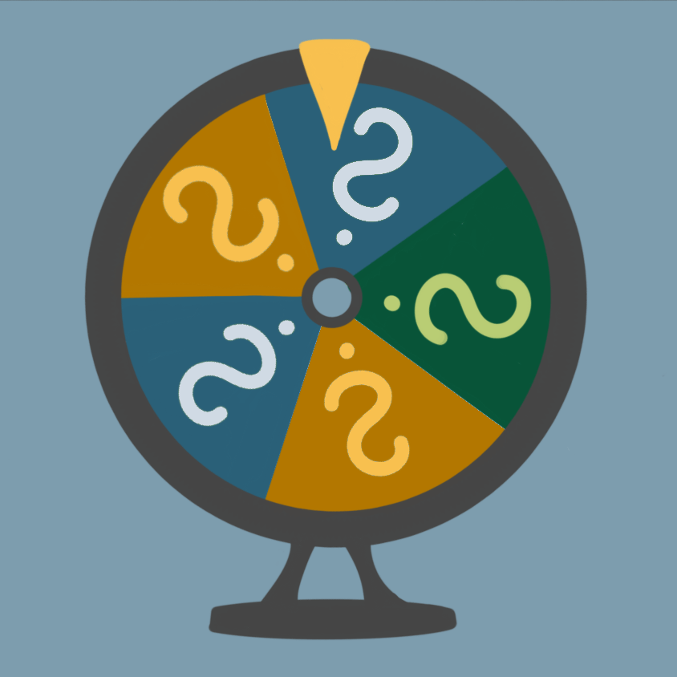

Systeme begegnen uns überall im Leben. Ob im Straßenverkehr, bei der Urlaubsplanung oder in der Küchenschublade - Strukturen können im Alltag eine große Hilfe darstellen. Sie sind jedoch nicht nur praktisch, sondern können auch einfach nerdig sein und Spaß machen.
Auf dieser Website findest du ein bisschen Inspiration, wie sich Nützliches und Humorvolles systematisch verbinden lassen.
Viel Spaß beim Stöbern und Entdecken!
Themenübersicht

Wandern
Die Seven Summits von Bodenmais - Natur pur auf den höchsten Gipfeln im Bayerischen Wald

Garten
Unkrautpflege, Schneckenparadies und Ernteglück - Ökologisches Gärtnern für faule Gemüsebauern

Gaming online
Genshin Impact - Tipps und Tricks rund um das beliebte Fantasy-Action-Rollenspiel

Gaming offline
Terraforming Mars - Wir erobern uns systematisch den Mars

Radfahren
On the road auf zwei Rädern - Touren, Kauftipps und mehr

Finde dein System
System ist für dich ein Fremdwort? Finde heraus, bei welchem System auch du ein Match finden könntest